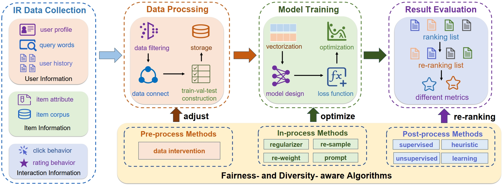
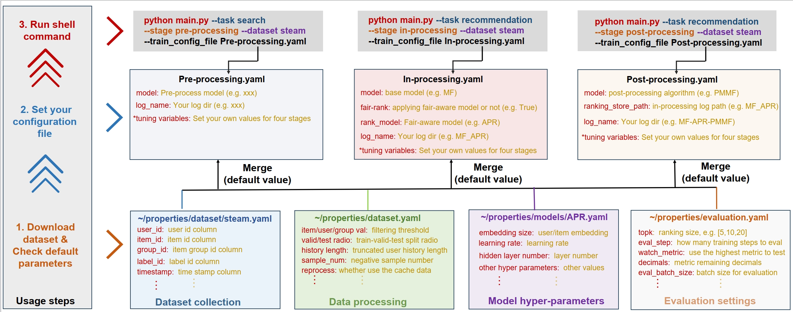
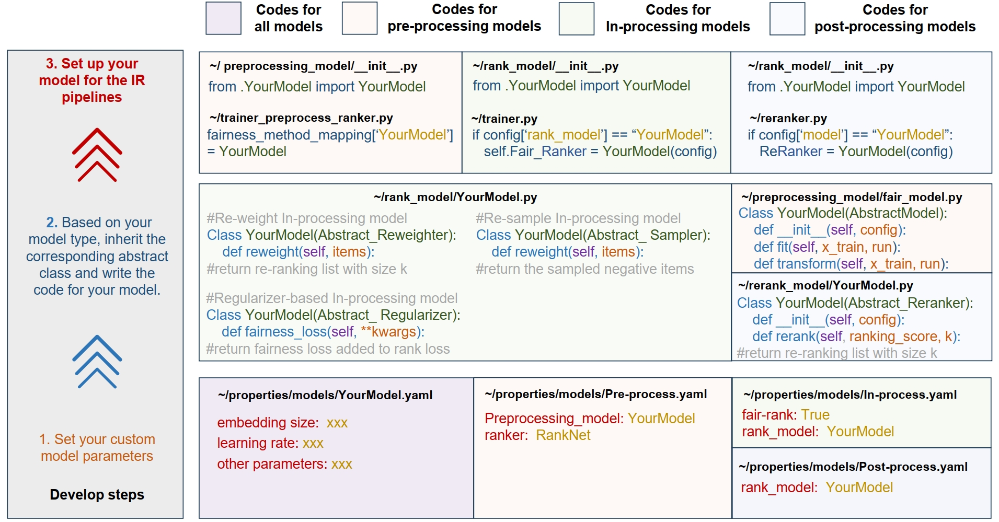

HomePage |
Introduction¶
FairDiverse is a unified, comprehensive and efficient benchmark toolkit for fairnes-aware and diversity-aware IR models. It aims to help the researchers to reproduce and develop IR models.
In the lastest release, our library includes 30+ algorithms covering four major categories:
Pre-processing models
In-processing models
Post-processing models
IR base models
We design a unified pipelines.
{kind=link}
For the usage, we use following steps:
{kind=link}
The utilized parameters in each config files can be found in following docs:
Recommendation
For the develop your own recommendation model, you can use following steps:
{kind=link}
Recommendation develop APIs
Recommendation other APIs
Abstract_EvaluatorCTR_EvaluatorLLM_EvaluatorRanking_EvaluatorLLMRecommenderAUC_score()Entropy()Gini()HR()MMF()MRR()MinMaxRatio()NDCG()dcg()mask_utility()reconstruct_utility()AbstractDatasetPairWiseDatasetPointWiseDatasetRankingTestDatasetSequentialDatasetBuild_Adjecent_Matrix()Init_Group_AdjcentMatrix()convert_keys_values_to_int()get_cos_similar_torch()get_iid2text()load_json()
The Team¶
FairDiverse is developed and maintained by RUC, UvA.
Here is the list of our lead developers in each development phase. They are the souls of RecBole and have made outstanding contributions.
Time |
Version |
Lead Developers |
|---|---|---|
Nov. 2024 ~ Feb. 2025 |
v0.1.1 |
License¶
FairDiverse uses MIT License.